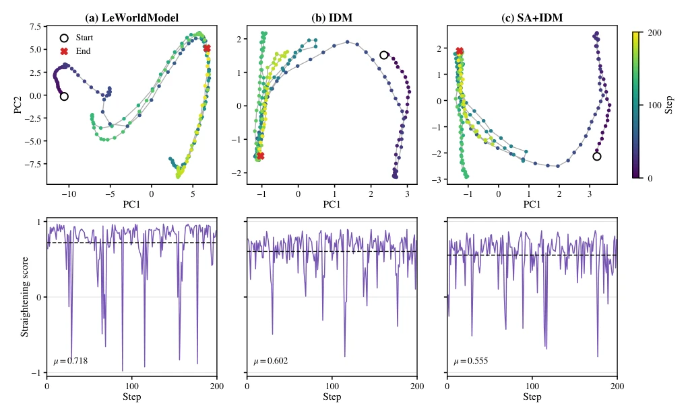
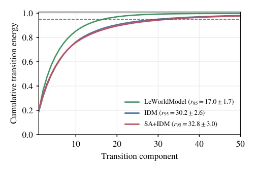

Fig. 1. Overview of the proposed model. The encoder E maps observations to latent representations, and the action-conditioned predictor F models their evolution. The inverse-dynamics head H predicts the executed action from consecutive representations, while the state-alignment head G grounds them in measured physical states. The dashed branch denotes the corresponding prediction at the preceding time step.
Fig. 2. Qualitative goal-conditioned planning on OGBench-Cube. Top: the reference trajectory between the fixed start and goal observations. Bottom: actual simulator observations obtained by executing CEM actions.

Fig. 3. Temporal straightening on a representative OGBench-Cube trajectory. Top: separate PCA projections of the encoded latent states, colored by time; circles and crosses mark the start and end. Bottom: local straightening scores, with dashed lines indicating trajectory means. All scores are computed in the full 192-dimensional latent space. The same qualitative pattern was observed across all sampled trajectories.

Fig. 4. Transition-subspace analysis over 100 fixed OGBench-Cube trajectories. Curves show mean cumulative transition energy under an uncentered SVD of ∆zt. Here, r95 is the number of components required to retain 95% of the energy.